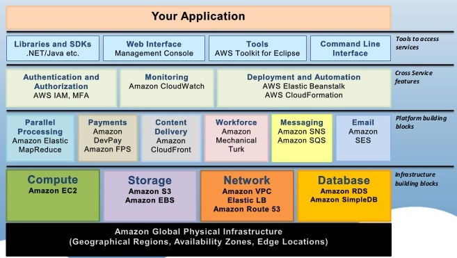
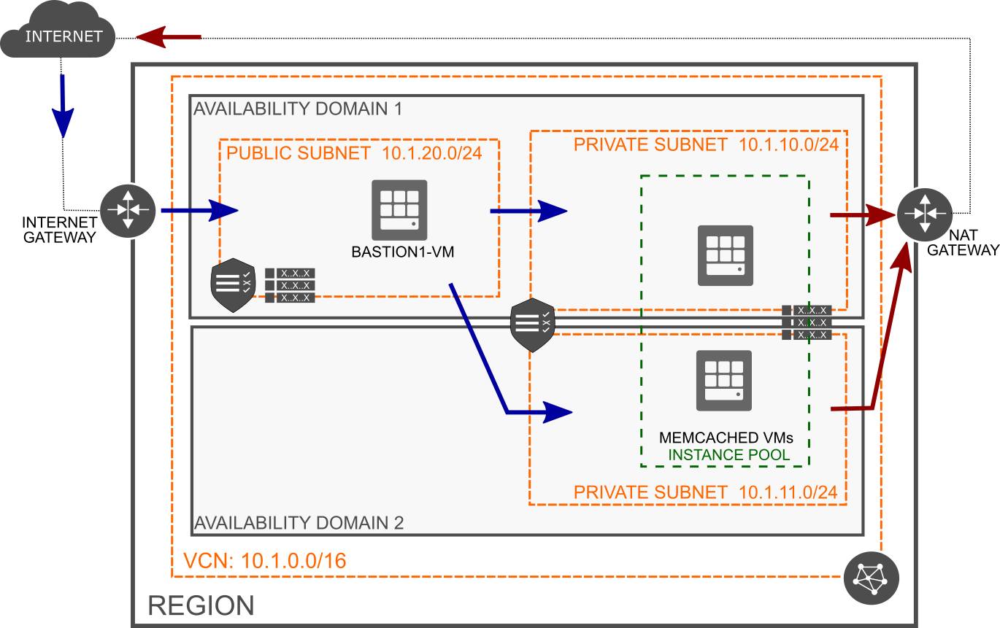

#META_LECTURE#: #TITLE#
•
•
•
•
Modified: #LAST_MODIFIED#
Humla v#HUMLA_VERSION#
Introduction
Terminology
Cloud computing
*aaS
DevOps
Cloud Native, Microservices
Serverless
What is a Cloud?
A different way of thinking
Got your grand mum's savings under your pillow?
probably not, you better have them in your bank
Data is your major asset
you better have them in a "bank" too
Someone can abuse your data?
banks bankrupt too, sometimes – it is a risk you take
there is a market and a competition
Outsourcing of application infrastructure
Reliability and availability
Low costs – pay-per-use
Elasticity – can dynamically grow with your apps
What is a Cloud?
Any app you access over the web?
A datacenter?
Offers virtualization
Any company having a datacenter wants to move to
Cloud provider should also offer services, such as:
scalability, storage
Possible to configure programmatically
integration to enterprise administration processes
usually REST interface
Traditional Solution to Infrastructure
Traditional hardware model
Up-front hardware investments
Hardware not optimally utilized
Good Performance – Cloud Solution
Cloud Computing model
No up-front hardware investments
Hardware optimally utilized
Cloud Computing Concepts
Resource Pooling
Resources reused by multiple tenants (multitenancy)
Resources: CPU, memory, storage, network
On-demand and Self-service
Resources are provisioned as they are requested
and when they are required
No human interaction, automatic
Scalability and Elasticity
Infrastructure may grow and shrink according to needs
Automatic or manual
Pay-per-use
Consumers only pay for resources when they use them
Cloud Computing Concepts (Cont.)
Service Models (aka Cloud Layers)
IaaS – Infrastructure as a Service
PaaS – Platform as a Service, Serverless
MWaaS, DBaaS, ...
FaaS
SaaS – Software as a Service
Deployment Models
Public Cloud
Private Cloud
Hybrid Cloud
Cloud Provider Example – Amazon AWS

Cloud Architecture
Service Models
IaaS: Infrastructure as a Service
Provides basic computing resources and services for application providers
Services for application providers
A consumer is able to deploy and run arbitrary software
Infrastructure implications
Exposing of infrastructure resources through
abstraction
Support for infrastructure resources – compute (hardware/OS/VM), storage, network, etc.
Supports isolation for multitenant environments
IaaS: Infrastructure as a Service
Usage
Predefined machine instances (micro, small, large, extra-large)
Linux OS, 613 MB of memory, 30 GB of Storage, Load Balancer, etc.
Pay-per-use – pay for resources you use (time or amount); no up-front costs
IaaS Services Examples
Elastic Storage
Monitoring resources
Amazon CloudWatch)
Auto Scalling of running instances
Load Balancing – distributing incoming traffic
across multiple instances
IaaS providers
Amazon EC2, GoGrid, Rackspace,OpenNebula, Oracle OCI, ...
PaaS: Platform as a Service
Provides scalable platform for applications
Services for application providers
No costs of buying and managing underlying infrastructure
hardware and software
Infrastructure implications
Scalable platform, deploy on-demand
Self service interface to deploy applications and services
Support for monitoring and measuring platform usage
Model supporting isolation in multi-tenant environments
PaaS: Platform as a Service
Usage
Choose software platform, e.g., JEE, .NET, Python, etc.
Pay-per-use – pay for the resources you use; no up-front costs
PaaS features
Auto Scalling and Load Balancing of applications
Persistent Storage - usually NoSQL database
Local development environment
Backends – for app instances with higher CPUand memory demands
Administration APIs for its services
PaaS providers
Google App Engine, Heroku,Windows Azure, etc.
SaaS: Software as a Service
Software delivery model for applications hosted in the cloud
typically software for end-users
services accessed using a web browser
provides API for programmatic access
SaaS characteristics
Typically build on top of IaaS or PaaS
Configurable and customizable modern Web applications
Usually basic version for free, need to pay for pro version
Global availability - any computer, any device
Easy management - automatic and fast updates
Pay-per-use – pay for the time you use
SaaS providers
Google Apps, Salesforce, iCloud, Flickr, Picasa, ...
Multitenancy
Multitenancy
Architectural approach where resources are shared between multiple tenants or consumers
Implications
Centralization of infrastructure in locations with lower costs
Peak-load capacity increases
Utilisation and efficiency improvements for systems that are not well utilised
Sharing options
Shared Everything
Shared Infrastructure
Virtual Machines
OS "virtualization"
Shared Everything
Resources are shared between all tenants or consumers
tenant: a service consumer
Common for the SaaS model
The application should provide tenant isolation
Data for multiple tenants is stored in the same database tables
Shared Infrastructure: Virtual Machines
Infrastructure shared via virtual machines
each tenant has its own virtual environment
Isolation provided by hypervisor
hypervisor: virtual machine manager, runs virtual machines
Resource contention depends on VM capability and configuration
Adds an additional layer and processes to run and manage
Shared Infrastructure: OS Virtualization
Infrastructure shared via OS Virtualization
Each tenant has its own processing zone
Isolation provided by the operating system
Resource contention depends on zone configuration
No VMs to run and manage, no abstraction layer between app & OS
Infrastructure as a Service
Terminology (1)
Region
A localized geographical area
A cloud provider usually has multiple regions around the world.
Availability Domain
A datacenter in a region; there can be more AD in a region
Tenancy
Isolated partition where a customer creates and organizes cloud resources.
Instance
Compute host running in the cloud
Bare Metal
Physical host that run directly on bare metal servers without hypervisor
Shape/Class
Amount of computing resources allocated to the instance
CPUs, Memory, Local Disk, Network Bandwidth, Number of VNICs
Image
A template of a virtual hard drive that defines operating system and other software for an instance.
Terminology (2)
Instance Pool
A group of instances
Virtual Cloud Network (VCN)
A virtual network in which instances run
It includes:
subnets
,
route tables
,
firewall rules
,
gateways
Block Volume
A virtual disk providing persistent storage
It can be used as a volume attached to the instance
Object Storage
Allows to store and manage data as objects in logical containers (
buckets
)
The data can be of any type and are usually of large size
The data does not change frequently
Examples: data backup, storing unstructured data, sensor-generated data
Access and Usage
Layers
Cloud Infrastructure → REST API → CLI, Web Console, other tools
Key pair
Authentication mechanism using
public
and
private
key
public key is uploaded to an instance, a client uses the private key to authenticate
Example: ssh using key authentication to access ssh deamon running in Linux
IaaS Example

Infrastructure as Code
Overview
Definition
Application envs (in a cloud) managed via definition files
Version control, team development, scripting, etc.
Major Technologies
Configuration Management Tools
install and manage software on machines that already exist
Examples: Ansible, Chef, Puppet
Abstraction of cloud infrastructure
Terraform
Terraform
Higher-level abstraction of the datacenter and associated services
Supports many service providers
Google, Microsoft, Oracle, AWS
Steps
Description of resources in Hashicorp Configuration Language (HCL)
instances, networks, firewall rules, routing tables, etc.
Terraform generates execution plan to reach the desired state
Terraform executes the plan to reach the desired state; can generate incremental execution plan